31 Ordering, sorting, and arranging
“When Laura was here I had the records arranged alphabetically; before that I had them filed in chronological order. . . Tonight, though I fancy something different, so I try to remember the order I bought them in:”
Ordering items means using a numeric or lexicographic criterion to rank them and having a rule for handling ties. Sorting items places them in groups and may include ordering. Arranging items includes ordering and sorting, but may involve using a subjective criterion. Flowers could be ordered by height or sorted by colour. They might be arranged in quite different ways, depending on how well they then look to the person arranging them.
31.1 What gets ordered, sorted, arranged?
31.1.1 Cases
Datasets can be sorted and ordered in many ways. The cases in the astronauts dataset on space travel (rfordatascience (2020a)) could be sorted into groups by nationality or sex. They could be ordered by year of mission or by year of birth. They could be sorted and ordered by combinations of these variables, for instance, by year of birth within nationality. Grouping and ordering datasets often reveals structures that default orders—whether lexicographic, temporal or random—may not. Ordering and sorting cases can be useful for checking extreme or special cases quickly. If some text has crept into a numeric variable, sorting can often identify which values are in error.
For sortings or orderings of the astronauts dataset there can be ties, cases that have the same values for the sorting variables, for example people born in the same year of the same nationality. These cases may be ordered randomly amongst themselves or in their original order (whatever that was) or in some other way. Ties would be much less likely if exact dates of birth and exact launch dates of missions were used, although even then pairs like the identical Kelly twins, two Americans, might cause difficulties. To ensure that a return to a particular ordering is always possible, it is essential to have a variable with a unique value for every case, possibly an ID variable constructed for just this reason. Being able to return to the initial order of a dataset is useful if something goes wrong (and something will).
The ordering of cases can affect printing if cases or lines overlap, as the dataset is printed in order. The lines for the three football teams in Figure 16.6 were drawn in alphabetic order, first Bournemouth, then Portsmouth, then Southampton, as can be seen by looking at where the lines cross. (The lines for the other teams in the leagues, drawn in light grey in the background, were drawn in a background layer first.) Figure 11.9 compares calculated values of diamond depth with the values given in the dataset. The data were ordered by the size of the absolute difference, so that the bigger differences, coloured red, were plotted last and hence on top.
Chapter 21 on the Comrades Marathon includes two plots of the performances of the Nurgalieva twins over the years, Figure 21.13, redrawn here as Figure 31.1. Elena ran every year from 2003 to 2015, while Olesya did not run in 2006 and 2012. In the plots, the line for Olesya is drawn on top. This works if it is remembered that Elena ran every year. If the line for Elena had been drawn on top, that would not have worked, even for the zoomed plot on the right.
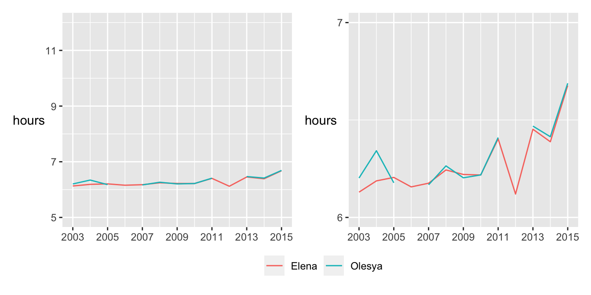
Figure 31.1: Performances of the Nurgalieva identical twins in the Comrades Marathon races (same data, different vertical scales)
31.1.2 Levels of categorical variables
Variables such as nationality and occupation each have two or more categories. If you draw up a summary table of counts or draw barcharts of them, the categories are likely to be ordered alphabetically by default. This has its advantages (it is easy to find a category in the table) and its disadvantages (categories with names early in the alphabet get more attention, categories you would like to compare may be far apart). Wainer calls this the “Alabama first” issue, as Alabama comes first alphabetically amongst the US States (Wainer (1997)). Categories may be ordered by counts, by weights, by proportions, by summary statistics on other variables. Comparisons for whatever statistic you order by become easier. Bars far apart must be different and you can tell which bars that are close together have higher or lower values by the order. More complex sortings, say countries within continents, are possible too.
One example is the barchart of the numbers of passengers and crew who boarded the Titanic at the four different ports. Figure 31.2 shows a plot with the default alphabetic ordering on the left and the plot used in §25.1 on the right, using the order the ship called at the ports. The great majority, including many crew, joined in Southampton.
Code
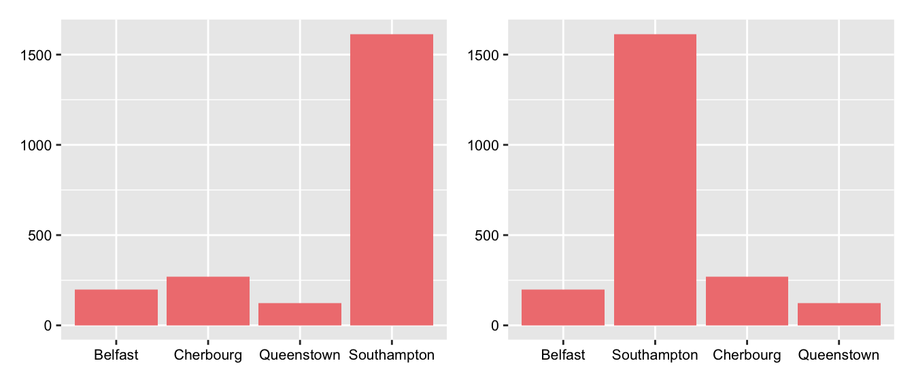
Figure 31.2: Barcharts using the default alphabetic ordering and the order in which the Titanic visited the ports
In the Gapminder analysis, §2.3, there are two barcharts of the four regions, one for the number of countries in each region (Figure 2.7) and one for the total population (Figure 2.8), both ordered by bar heights. The two are shown again here in Figure 31.3. The first shows that Africa and Asia have more countries than Europe or the Americas, while the second shows that Asia has more of the world’s population than the other three regions put together.
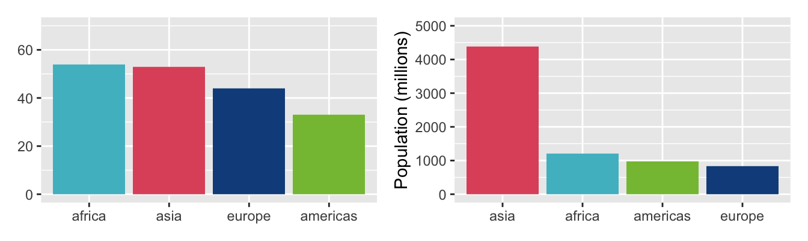
Figure 31.3: Numbers of countries and total populations in the four Gapminder regions
A common reason for reordering categories is to produce a recognisable and memorable pattern, for instance steadily increasing or decreasing. Figure 17.7 shows sales of station wagons and SUVs by year. The original plot is on the right of Figure 31.4 and a plot using a default lexicographic ordering of the vehicle types is on the left.
Code
Veh1gx <- Veh1g %>% group_by(VClass, year) %>% summarise(nn=n())
ggplot(Veh1gx, aes(year, weight=nn)) + geom_bar(aes(fill=VClass)) + facet_grid(rows=vars(VClass)) + scale_fill_manual(values=swSUVpal) + ylab(NULL) + xlab(NULL) + theme(strip.text.y = element_text(angle = 0), legend.position="none") + scale_y_continuous(breaks = c(0, 150))
vgf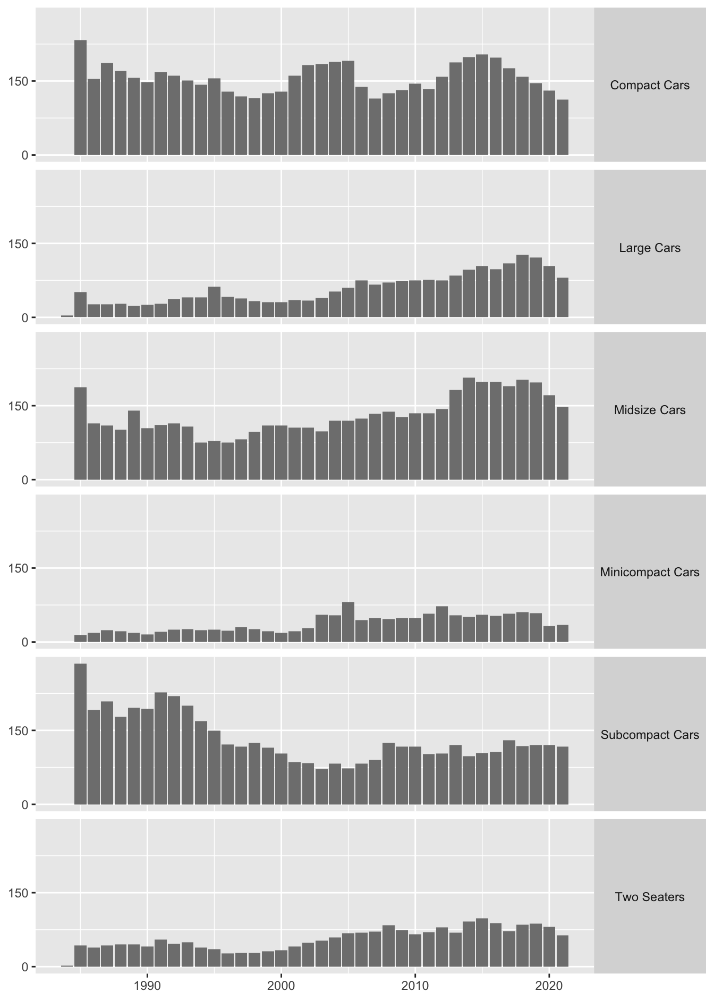
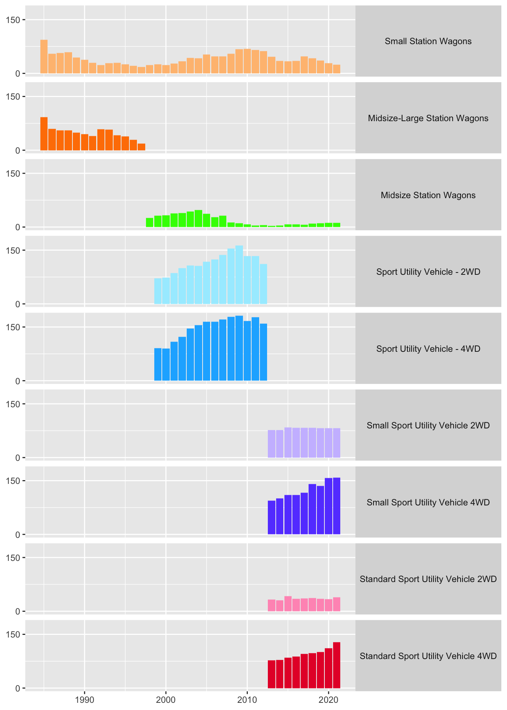
Figure 31.4: Annual sales of station wagons and SUVs in default ordering (left) and revised ordering (right)
The ordering chosen put the station wagons first and then the SUVs. Within the station wagon group, the models were ordered by increasing size and earliest available production year. Within the SUV group, they were ordered by type using earliest available production year and within that by 2WD and 4WD (two-wheel and four-wheel drive). Multivariate ordering offers many different possibilities, especially when variables are not nested within one another.
31.1.3 Variables
Datasets come with a particular order of variables. There might be an ID variable, some demographic or structural variables, and then some measurements. All of these might be in a rational order, they might not. Datasets with large numbers of variables are easier to handle if the variables are grouped and ordered. The vehicles dataset made available by the US Department of Energy includes 83 pieces of information on 43516 vehicles. The first 65 variables are labelled alphabetically, so that three defining variables, make, model, and year, appear rather late and not together.
31.2 Ordering and sorting within graphics
31.2.1 Boxplots
Boxplots by group are a space-efficient way of comparing distributions. The group ordering is sometimes given (e.g., in Figure 11.11 of carat by clarity from the diamonds dataset). If not, it is useful to look at different orderings, possibly by a statistic of the individual boxplots (e.g., median or maximum) or by using another dataset statistic associated with the group variable. In Figure 8.13 the rankings of chess players were displayed in boxplots for the countries with the most rated players, and the countries were ordered by their median player rating. As with bars in barcharts, the ordering of the boxplots will facilitate some paired comparisons more than others. The median ordering makes comparison of the medians easy by definition. An ordering by, say, maxima, would favour that comparison.
Boxplots are handy for summarising decathlon data. Each competitor competes in ten track and field events. The results are converted to a points system to make them comparable and the winner is the person with the most points. Figure 31.5 shows the points scores for the 116 top-ranked decathletes in April 2021 (Salmistu (2021)).
Code
data(Decath21)
Decath21 <- Decath21 %>% mutate(Run100m=Run100m/100, Run400m=Run400m/100, Hurdle110m=Hurdle110m/100, Run1500m=60*floor(Run1500m) + 100*(Run1500m-floor(Run1500m)))
Decath21 <- Decath21 %>% separate(Venue, c("Location", "Year"), remove=FALSE, sep=-5)
Decath21 <- Decath21 %>% mutate(`100m`= floor(25.437*(18-Run100m)**1.81), Longjump = floor(0.14354*(100*LongJump-220)**1.4), Shotput = floor(51.39*(ShotPut-1.5)**1.05), Highjump = floor(0.8465*(100*HighJump-75)**1.42), `400m` = floor(1.53775*(82-Run400m)**1.81), `110mHurdles` = floor(5.74352*(28.5-Hurdle110m)**1.92), Polevault = floor(0.2797*(100*PoleVault-100)**1.35), Discus = floor(12.91*(DiscusD-4)**1.1), Javelin = floor(10.14*(JavelinD-7)**1.08), `1500m` = floor(0.03768*(480-Run1500m)**1.85))
Decath21 <- Decath21 %>% rowwise(Rank) %>% mutate(tot=sum(c_across(c(`100m`:`1500m`)))) %>% ungroup()
Decath21b <- Decath21 %>% pivot_longer(cols=`100m`:`1500m`, names_to="Event", values_to="Points")
Decath21b <- Decath21b %>% mutate(eventx=factor(Event, levels=c("100m", "Longjump", "Shotput", "Highjump", "400m", "110mHurdles", "Discus", "Polevault", "Javelin", "1500m")))
ggplot(Decath21b, aes(eventx, Points)) + geom_boxplot() + xlab(NULL) + ylab(NULL)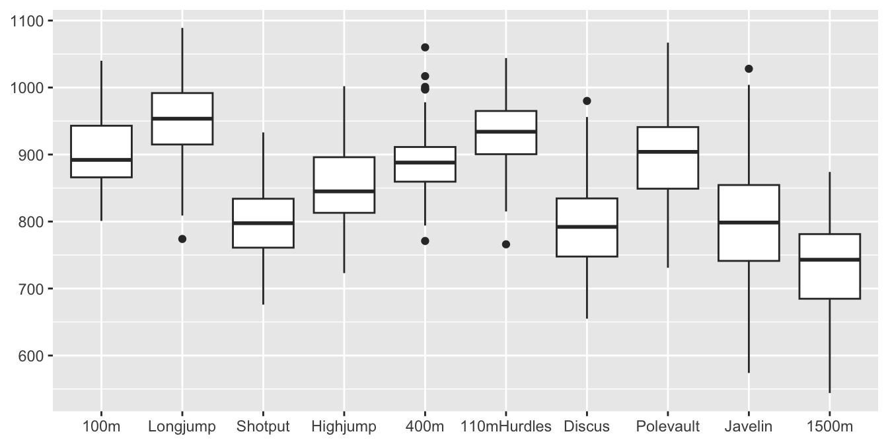
Figure 31.5: Boxplots for the points in the 10 decathlon events in the order they take place for the top 116 decathletes in April 2021
It is striking that, although the points are supposed to be comparable, more are awarded for some events than others. Long jump performances get the most points and performances in the 1500 metres the least. The javelin appears to have the most variability and the 400 metres stands out in including three high outliers. The 1500 metres is a special event for a number of reasons: it is a longer run than the other three running events, requiring different abilities; it is the last event at the end of the second day, so the athletes will be tired; the top decathletes in the competition after nine events run the 1500 metres together, so tactics may be more important than a fast time.
31.2.2 Sorting into groups and faceting plots
Faceting displays data subgroups in the same graphical form, e.g., Figures 3.6 and 6.4. The subgroups are defined by combinations of variables. If the graphical form can be internally ordered (e.g., the bars in a barchart, the boxplots in a group of boxplots or the dotplots in Figure 6.4) then you have what might be called zero order faceting.
Sorting cases into groups is often carried out to display statistics, as was done in Figure 9.5 grouping cases by states (and grouping the states by region), or to draw summary plots as in Figure 17.1 grouping cars by class, drive type, and petrol.
Sorting into groups was used in Chapter 2 to draw countries in the same region together (Figure 2.5), in Chapter 13 to keep charging stations at the same location together and to colour locations by type, in Chapter 17 to put what were thought to be similarly sized cars together, in Figure 20.7, shown again here as Figure 31.6, to place events for the same swimming stroke together, and in Chapter 26 to keep constituencies in the same Bundesland together and to display the spatial distributions of seat wins for the individual parties.
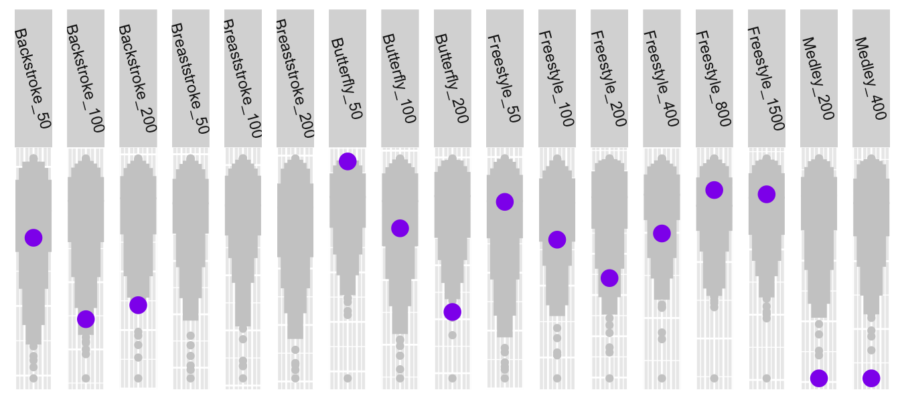
Figure 31.6: Katinka Hosszu’s best times by event (in purple) compared with the 200 best in each event, with events sorted by stroke and distance
Figure 15.7 displays 24 barcharts, each with 17 bars. The facets are ordered by the percentage of squad players playing in their own country. The bars themselves are ordered by the numbers of players from a country’s league playing in EURO2020, except for the ‘Other’ category, which has been placed last. The aims are to put countries close together that are similar in home percentage value and to put leagues close together that have similar numbers at the tournament.
Another example of arranging facets is shown in Figure 6.13 where the countries are put in order of the first time they hosted the Olympic Games. This matches the aim of the graphic better than a default alphabetic order.
Sorting into groups gets complicated when there are several grouping variables. Variables may be nested in a hierarchy, such as constituencies within regions or they may have no such structure, such as type of car, manufacturer, type of fuel. Groupings need to be found that reflect the aims of the study.
31.2.3 Mosaicplots
Mosaicplots offer a variety of ways of displaying multivariate categorical data. Both the order of the variables and the orders of the levels of the individual variables can have a big influence, as can the choice of mosaicplot form and whether variables are plotted horizontally or vertically (Hofmann (2008)).
There are two mosaicplots in Chapter 25 about the sinking of the Titanic, Figures 25.8 and 25.9, shown again in Figure 31.7. In the plot on the left the passenger classes have been drawn first in the natural order of first, second, third (alphabetic in English, but not in all languages), followed by the crew departments ordered by survival rates. This shows that survival rates declined by class and that the rates were lowest for the crew—excepting the small group of deck crew who would have manned the lifeboats. In the second plot on the right of only the passengers, sex has been drawn first with females to the left and males to the right, and class has been ordered within sex. Placing females first and then males means that there is a general decline in survival rate from left to right—apart from the low rate for males travelling second class.
In both plots the numbers in each group are shown by the widths of the bars. This information can be seen in many other plots. Here in the first plot it shows how small the two groups with differing survival rates amongst the crew are. In the second one it reminds readers that there were more male than female passengers and that the largest group was third class males.
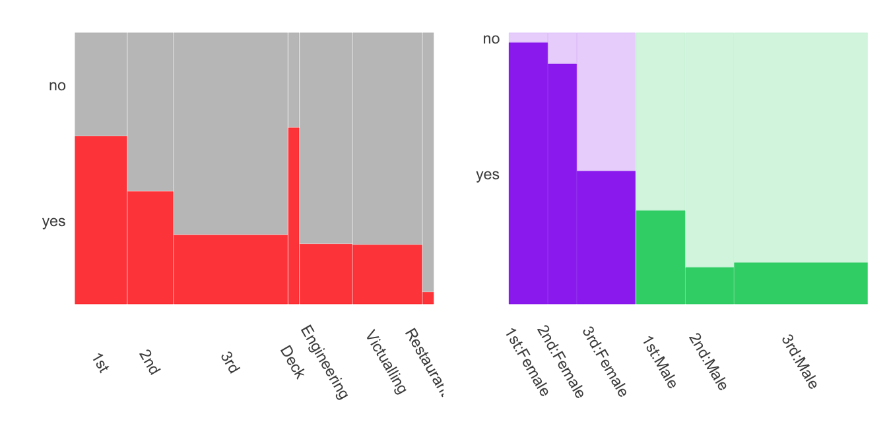
Figure 31.7: Mosaicplots of Titanic survival rates
In the analysis of software for facial recognition in Chapter 22 the plots are all drawn with males first and then females to emphasise the general error increase from left to right.
31.2.4 Parallel coordinate plots
Parallel coordinate plots are drawn with one horizontal axis and many vertical axes, one for each variable drawn. The ordering of the axes makes a major difference to what information can be seen. Orderings can be based on a variety of variable statistics.
Returning to the effect of decathlon events not being scored comparably, consider the differences in scores between competitors. Giving each competitor 50 points more in an event will not change overall rankings at all. Figure 31.8 is a parallel coordinate plot of points given to the top 79 ranked performances in the individual events with points for the 40th highest subtracted. Here the ranked values are joined by lines, not the individual competitors.
Code
Decath21bs <- Decath21b %>% group_by(Event) %>% mutate(rEvent=rank(-Points)) %>% arrange(Event,rEvent)
Decath21bs <- Decath21bs %>% mutate(rrEvent=seq(1:116))
d21bsW <- Decath21bs %>% pivot_wider(id_cols=rrEvent, names_from=Event, values_from=Points)
d21bsW <- d21bsW %>% mutate(across(`100m`:Shotput, ~{.x -sort(.x)[77]}))
Range <- function(v1) {max(v1)-min(v1)}
qn <- d21bsW %>% filter(rrEvent < 80) %>% summarise(across(c(`100m`:Shotput), Range))
qn <- qn %>% pivot_longer(cols=everything(), names_to="name", values_to="Stat") %>% arrange(Stat)
d21bsW %>% filter(rrEvent < 80) %>% pcp_select(all_of(qn$name)) %>% pcp_scale(method="raw") %>% ggplot(aes_pcp()) + geom_pcp_axes() + geom_pcp(colour="grey70") + geom_hline(yintercept=0, colour="brown4", lwd=1.5) + ylab(NULL) + xlab(NULL) + theme(axis.text.x=element_text(angle=-45))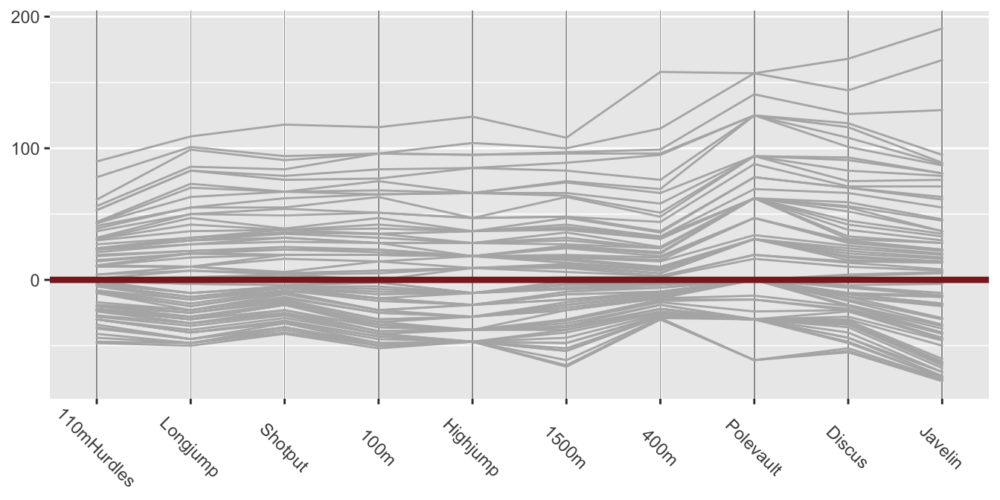
Figure 31.8: Parallel coordinate plot of the top 79 ranked scores for each decathlon event in April 2021
The nth highest polyline connects the nth best performance in each event. Subtracting the same statistic from the points score for each event makes the levels comparable while keeping the differences on the same scale. The zero line equivalent to the 40th best performance has been coloured brown. There is bigger variability above than below as the distributions are, of course, skewed. The events are not in the same order as in Figure 31.5. They have been ordered by increasing range. The lines are close to parallel for the first few events, implying similar distributions, including for the long jump and the 1500 metres, the two most different events in terms of points awarded. The javelin has greater variability, as observed already. The discrete nature of the high jump and pole vault points is because the bars are set at certain fixed heights that competitors either clear or fail to clear.
Parallel coordinates are excellent for studying the data from individual decathlon performances too. Now the polylines link performances of the same individual. The scales of the vertical axes are the same for each event and the same as in Figure 31.5. The difference in Figure 31.9 is that the events are ordered by increasing median event points.
Code
Decath21p <- Decath21 %>% mutate(Rankh=117-rank(tot), Hil=ifelse(Rankh<5, Rankh, 5))
decNames <- c(Decath21p$Decathlete[1:4], "others (112)")
decNames[3:4] <- c("Roman Sebrle", "Tomas Dvorak")
qn <- Decath21p %>% summarise(across(c(`100m`:`1500m`), median))
qn <- qn %>% pivot_longer(cols=everything(), names_to="name", values_to="Stat") %>% arrange(Stat)
dc21p <- Decath21p %>% arrange(-Hil) %>% pcp_select(all_of(qn$name)) %>% pcp_scale(method="raw") %>% ggplot(aes_pcp()) + geom_pcp_axes(colour="white") + geom_pcp(overplot="none", aes(colour=as.factor(Hil))) + ylab(NULL) + xlab(NULL) + theme(axis.text.x=element_text(angle=-45), axis.ticks.y=element_blank(), axis.text.y=element_blank(), legend.title=element_blank(), legend.key.size = unit(0.5, "cm")) + scale_colour_manual(values=c("red", "darkorchid3", "blue", "brown", "grey85"), labels=decNames)
dc21p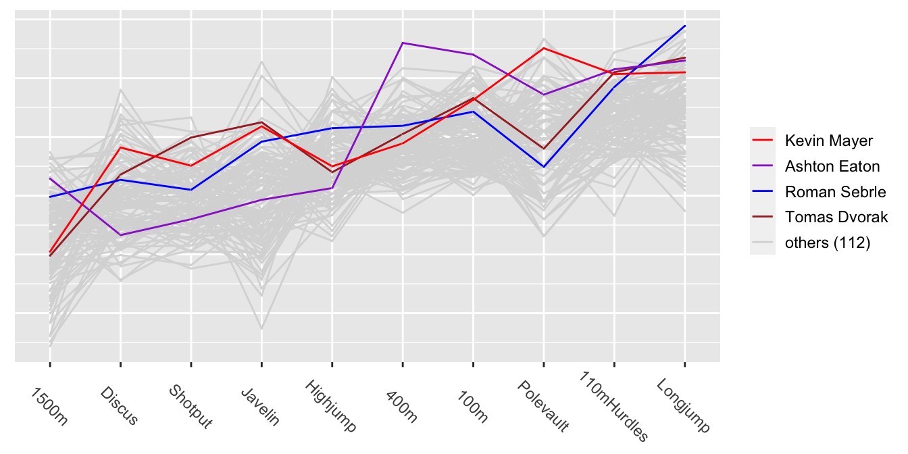
Figure 31.9: Parallel coordinate plot of the 10 decathlon events
The four best decathletes are listed in the legend in order of their total point scores. They have been highlighted in different colours and drawn last so that their lines appear on top. Mayer, the world record holder, is clearly better at the pole vault than the others highlighted. Eaton is strong in the four running events, particularly the 100 and 400 metres, where he is best of all the decathletes in the dataset. His weaknesses are the three throwing events.
So ordering is not only relevant for the variables in a parallel coordinate plot, it is advantageous for ordering the cases when they are coloured by groups (cf. Figure 31.9). The cases of most interest should always be drawn last, so that their polylines appear on top of the others. There are many other options influencing how parallel coordinate displays are drawn and all have to be considered together to get effective displays. Using more displays reveals more information.
At a more complex level, generalised parallel coordinate plots that can handle both numeric and categorical variables, are affected by several orderings: the order of the variable axes across the plot, the orders of the levels of categorical variables, the orders of the cases within category levels, and the order of the cases in the dataset (as this determines the order the lines are drawn). The ggpcp package offers tools for including categorical variables in parallel coordinate plots (Hofmann et al. (2022)). Its key innovations are to draw each case individually and to order the cases within categories. These reduce the numbers of line crossings, make the display more readable, and make it possible to follow individual cases across the display.
Figure 31.10 shows Figures 18.7 and 18.8 from §18.2. The reordered version on the right is easier to decode.
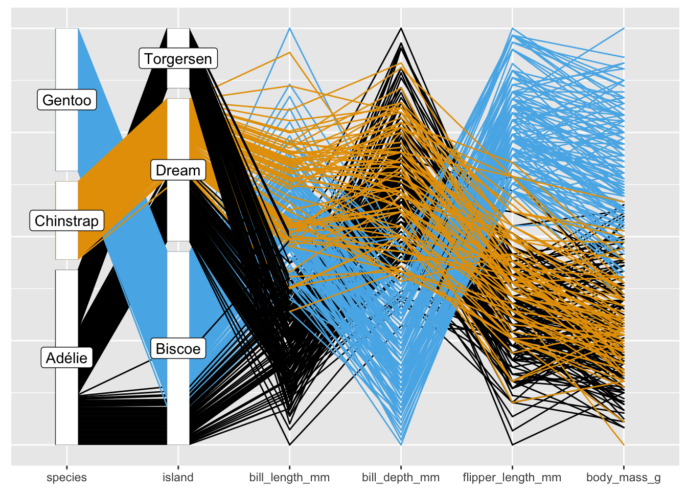
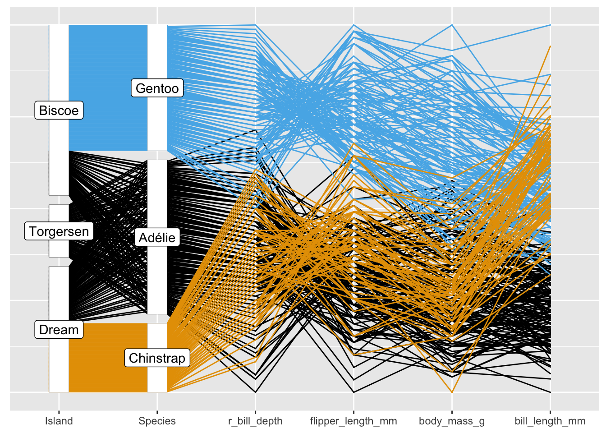
Figure 31.10: Parallel coordinate plots of the Palmer Penguin data (initial and reordered)
31.3 Numbers of orderings and sortings
Often there are surprisingly many possible orderings. The basic Titanic dataset has 4 variables. The Survived variable should doubtless always be the final variable, but the other three variables, Class, Age, and Sex could be ordered in 3!=6 ways. The categories of the three binary variables could each be ordered in 2 ways, making 8 in all. The four categories of Class have a natural order, but could be reversed giving another two possibilities. Altogether that makes 96 orderings of variables and categories that might be considered.
The letters of the word ‘sorting’ can be ordered themselves in 7! = 5040 ways, but only one other makes a common word, ‘storing’. A random ordering would have little chance of making sense, although some subsets of the letters, for instance “strong”, “ingots”, “string” or “grist”, would. Sortings and orderings in graphics have a better chance of conveying information, especially when guided by context and statistics. As always with graphics there is unlikely to be an ‘optimal’ solution, and so the task is more to find a set of informative sortings and orderings.
31.4 Arranging graphics
Ensembles of graphics are affected by how the individual graphics are arranged, as in Figure 13.1 and Figure 12.1. Other arrangements might not have fitted together as well or given a different impression. It is worth trying more than one, however informative a first arrangement appears.
Small multiples, named and popularised in Tufte (1983), are displays of many graphics of the same type and may have a natural order. The boxplots of chess rankings by age in Figure 8.19 are one example. Often there will be no such natural order, for instance in ordering variables in a scatterplot matrix. Grouping variables by type may be effective, as in §11.2, where two scatterplot matrices are drawn. The first one is for the three dimensions and carat and the second for carat and the remaining three continuous variables. Ordering by statistics of various kinds can be informative, the best strategy is to consider more than one ordering.
The arrangement of graphics in a faceted display is determined by the faceting variables chosen for the rows and columns, their ordering within rows and within columns, and the ordering of their category levels. This is apparent in Figure 23.4, drawn here as Figure 31.11, showing groups across four shearwater measurements. The rows are arranged first by border and then by undertail, the columns are ordered by eyebrows, and the order of each of those three variables has been specifically chosen. Other orderings would have made it more difficult to interpret the structure.

Figure 31.11: Barcharts of collar faceted by eyebrows, border, and undertail for the Audubon and Galápagos shearwaters
The 22 facets of Figure 3.13, showing numbers of films of different genres over the years, could have been drawn all with the same vertical scale or all with individual vertical scales. It seems more helpful to display them in rows with different vertical scales, but with the same scale across each row.
Main points
- Cases, categorical variable levels, variables can all be sorted and ordered.
- The impact of boxplots, faceted plots, mosaicplots, and parallel coordinate plots is strongly influenced by the orderings within the plots.
- Ordering categories is better than leaving them in a default alphabetic order.
- There are no best sortings and orderings: there are very many of them. Different alternatives may reveal different information.